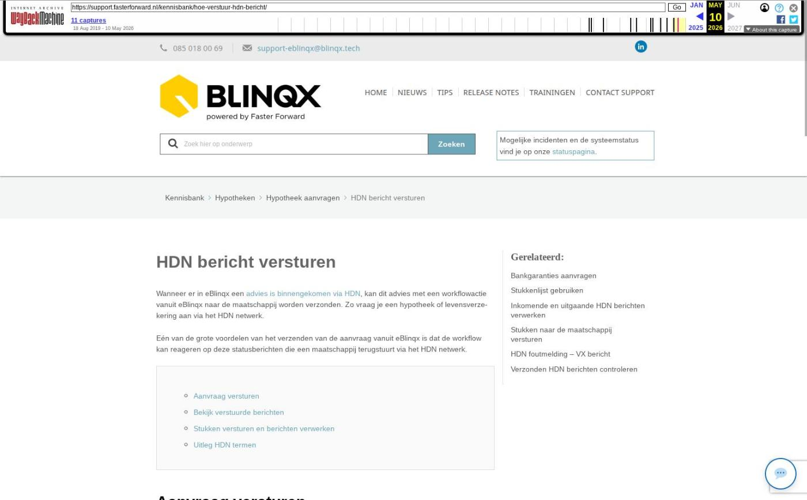

HDN bericht versturen

Tekstinhoud
HDN bericht versturen
Wanneer er in eBlinqx een advies is binnengekomen via HDN, kan dit advies met een workflowactie vanuit eBlinqx naar de maatschappij worden verzonden. Zo vraag je een hypotheek of levensverzekering aan via het HDN netwerk.
Eén van de grote voordelen van het verzenden van de aanvraag vanuit eBlinqx is dat de workflow kan reageren op deze statusberichten die een maatschappij terugstuurt via het HDN netwerk.
Aanvraag versturen
Bekijk verstuurde berichten
Stukken versturen en berichten verwerken
Uitleg HDN termen
Aanvraag versturen
Ga naar een klantdossier in de offerte/productkaart en klik hier op het paarse pijltje achter de status.
Je kiest hier voor 'Verstuur de aanvraag via HDN. Informeer klant (concept)'. De exacte omschrijving van de stap kan in jouw eBlinqxomgeving iets anders zijn.
Zodra de aanvraag is ontvangen door de maatschappij, sturen zij een statusbericht (SX-bericht).
Bekijk verstuurde berichten
In het klantdossier zie je in het product onder het tabblad 'HDN' terug welke HDN berichten er zijn verzonden en ontvangen. Zo zie je alle updates van de aanvraag van dit product, of het nou een hypotheek of een levensverzekering is.
Wanneer je de aanvraag via HDN hebt verzonden, stuurt de maatschappij een statusbericht (SX) terug. Via het vergrootglas achter het bericht kan je zien wat de status is.
Stukken versturen en berichten verwerken
Als de maatschappij stukken opvraagt via een DA bericht, ga je naar het tabblad 'Stukkenlijst' om deze documenten te verzenden.
STUKKEN VERSTUREN
Zodra je vervolgens weer HDN berichten ontvangt van de maatschappij, verwerk je deze in het juiste klantdossier.
HDN BERICHTEN VERWERKEN
Uitleg HDN termen
Het HDN verzendnummer is jouw HDN certificaatnummer. Deze staat onder jouw organisatie onder 'Beheer', in het tabblad 'Inventarisatie'.
Betekenis HDN berichten:
AX: Aanvraagberichten
SX: Statusberichten
OX: Offerte berichten
KX: Krediet bericht (speciaal voor Consumptief Krediet)
VX: Systeemmelding (waarschuwing)
XX: Systeemfoutmelding (foutmelding)
PX: Prolongatie bericht
DX: Document status bericht
DA: Documenten bericht
LX: Leven bericht (speciaal voor levensverzekeringen)
IA: Informatieaanvraag bericht
IX: Reactie op IA bericht met daarin de betreffende informatie
WX: Bankgarantie
Laatste update: 15 oktober 2025
Tagged: hdn
Was deze informatie nuttig?
Ja Nee